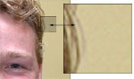
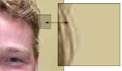

Forside
Introduktion
Valg af
Anvendelse
Motiver

Kvalitet/komprimering
Et billede fylder rigtig meget i hukommelsen, faktisk så meget at hvis kameraet ikke gjorde noget ved det, ville man kun kunne have ganske få billeder på selv de dyreste/største hukommelseskort. Derfor komprimerer kameraet billedet inden billedet bliver gemt på hukommelseskortet.
Hvad er Komprimering?
Komprimering er kort fortalt en metode, hvor man reducerer den plads et billede fylder i hukommelsen. Der findes mange forskellige komprimeringsmetoder, hvoraf den mest anvendte er JPEG (Joint Photographic Experts Group), hvilket vi bruger som udgangspunkt.
Alt afhængig af hvor meget man komprimerer et billede, mister man informationer. Dette kan være informationer om farvegengivelse og -overgange, og således bliver et billedet grimmere, jo mere man komprimerer det. Man kan dog komprimere i mange forskellige niveauer; lige fra et niveau hvor billedkvaliteten er uændret, til et niveau hvor man næsten ikke kan se hvad billedet forstiller.
|
 fig. 3, potræt v./lav kompression |
 fig. 4, potræt v./høj kompression |
{kind=link}
{kind=link}
I modsætning til opløsningen, hvor det er hele billedet der bliver påvirket, kan man med komprimering påvirke enkelte områder hver for sig. Det kan man udnytte hvis der er et område i billedet hvor pixelene er næsten ens, her kan man gemme området som én stor pixel uden at det kan ses. Den forskel der er på pixelene i et område bliver sammenlignet med den kvalitet man har valgt, og hvis forskellen imellem pixelene er mindre end hvad kvaliteten er defineret som, bliver de gemt som én stor pixel.
Denne del af komprimeringen er rigtig god når et billede har store udetaljeret områder, f.eks. ved et portrætbillede (fig. 3), hvor baggrunden normalt er en ensfarvet væg eller lign. Som det tydeligt kan ses på fig. 4 (tryk evt. for større billede), bliver baggrunden samlet til én farve hvis man sætter kompressionen op, uden at det har en større negativ effekt på ansigtet, som har en langt højere detaljegrad.
« Tilbage | Næste: anvendelse »
Termer brugt på denne side: Komprimering JPEG Komprimering JPEG
|
Til top |